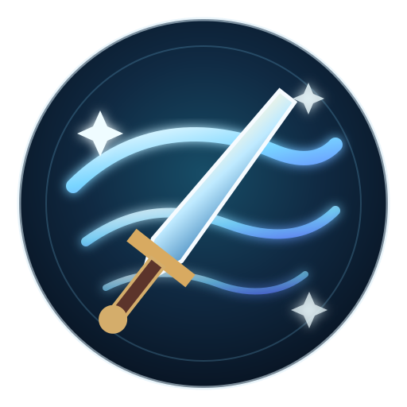

LYRIA
리아LV. 1 · 바람의 검사
WINDRISE FRONTIER
바람이 잠든 초원
고대의 길이 다시 숨을 쉰다
ELITE ENCOUNTER폐허의 기사회피와 패링으로 자세를 무너뜨려라
RUIN KNIGHT · ELITE
폐허의 기사
자세를 무너뜨리면 큰 피해를 줄 수 있습니다
E
FINISH처형
2 HITS
PERFECT DODGE · COUNTER READY
첫 번째 기억
언덕 너머의 무너진 신전으로 향하라
빛나는 폐허와 높은 지형을 따라가 보세요.
J연속베기
K강공격
Q패링
⇧회피 대시
A/D 이동 · SPACE 점프 · J 연속베기/반격 · K 강공격 · Q 패링 · SHIFT 회피/Air Dash · E 처형/상호작용

WARRIOR MEMORY AWAKENED
바람의 검사 기억
새 이동 능력 · AIR DASH
공중에서 SHIFT · 착지 시 재충전 · 3연격 마지막 타격이 바람 검기를 방출합니다
ABILITY GATE바람의 힘이 필요하다신전의 기억을 얻으면 이 길이 열릴 것 같습니다.
UPPER RUINS · WIND CORRIDOR바람의 상층 폐허
바람의 잔향 0 / 3
✦
WINDRISE고대의 바람을 불러오는 중…✦